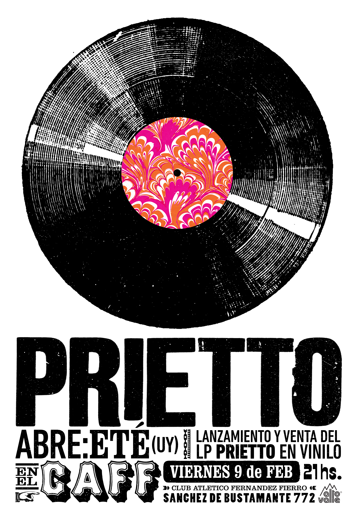
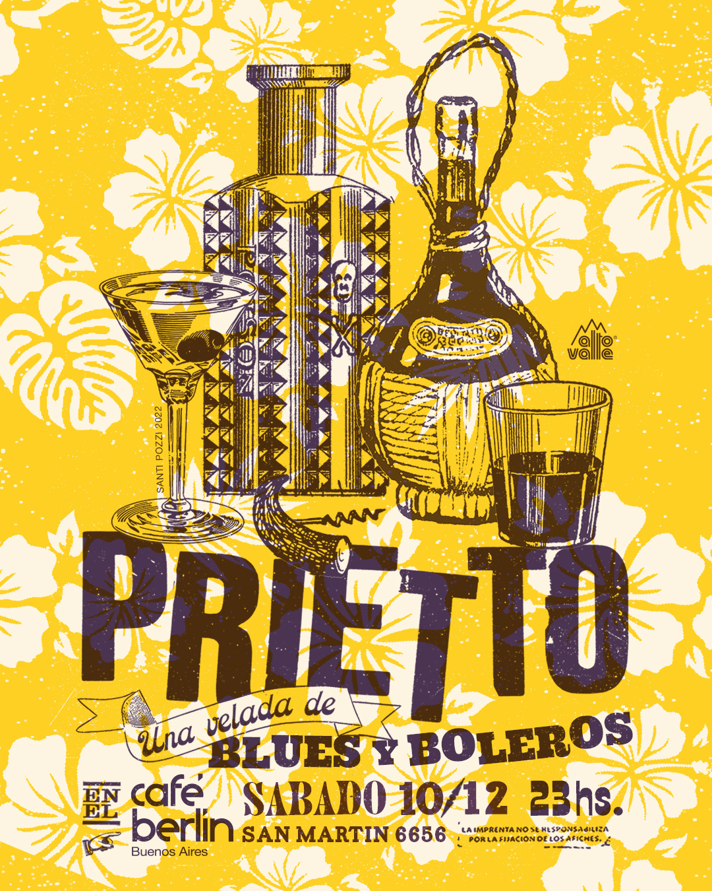

PRIETTO
Maxi Prietto — solista, Los Espíritus y Prietto Viaja al Cosmos con Mariano. Blues rioplatense, psicodelia y canción grabada a cinta.
Buenos Aires · AR
MMXXVI
- 01 Biografía El sonido analógico →
- 02 Fechas La ruta nocturna →
- 03 Discografía Registros de obra →
- 04 Vídeo Vibraciones →
- 05 Archivo Posters & texturas →
- 06 Contacto Prensa & booking →
blues · psicodelia · canción
seguí bajando ↓
01 — Biografía
Mística
Compositor y guitarrista · escena independiente
Mística
de ensayo
Compositor y guitarrista · escena independiente
«Ecos de cinta abierta, guitarras distorsionadas por el calor de la tarde y el latido hipnótico del blues rioplatense.»
Maxi Prietto trabaja con la repetición psicodélica y la mística analógica. Desde sus comienzos con el dúo Prietto Viaja al Cosmos con Mariano, adoptó grabaciones directas a cinta, la reverberación y el sonido crudo como parte de su propuesta sonora.
Al frente de Los Espíritus, fusionó raíces del blues rioplatense y el rock con bases rítmicas de herencia africana y caribeña, recorriendo escenarios locales e internacionales de manera autogestiva. Sus composiciones proponen un trance urbano donde conviven las calles de la noche y el rumor del río.
Su faceta solista complementa este ecosistema con canciones despojadas: boleros psicodélicos, grabaciones lo-fi caseras y composiciones acústicas que exponen su interés por la simpleza melódica y la atmósfera de lo cotidiano.

02 — Fechas
La ruta
Fechas confirmadas · mapa psicodélico del Cono Sur
La ruta
nocturna
Fechas confirmadas · mapa psicodélico del Cono Sur
04Jun · Jue
ComunaSan Luis · Los Espíritus en vivo
Tickets
05Jun · Vie
Mamadera BarSan Juan · Los Espíritus en vivo
Tickets
06Jun · Sáb
NidoMendoza · Los Espíritus en vivo
Tickets
12Jun · Vie
Casa BravaRosario · Los Espíritus en vivo
Tickets
19Jun · Vie
Club ReQuilmes · Los Espíritus en vivo
Tickets
22Nov · Sáb
The Roxy Live · EspecialBuenos Aires · Los Espíritus en vivo
Tickets
03 — Discografía
Registros
Del folk espectral a la psicodelia eléctrica y experimental
Registros
de obra
Del folk espectral a la psicodelia eléctrica y experimental


05 — Archivo
Rumbo a
Rumbo a
Hong Kong





06 — Contacto
Llegar
Prensa · booking · material físico
Llegar
al cosmos
Prensa · booking · material físico
Para contrataciones, notas de prensa o consultas sobre material físico y vinilos, escribinos a través de los canales oficiales.
Buenos Aires, Argentina · © 2026
Prietto · Cosmos, Blues y Canción